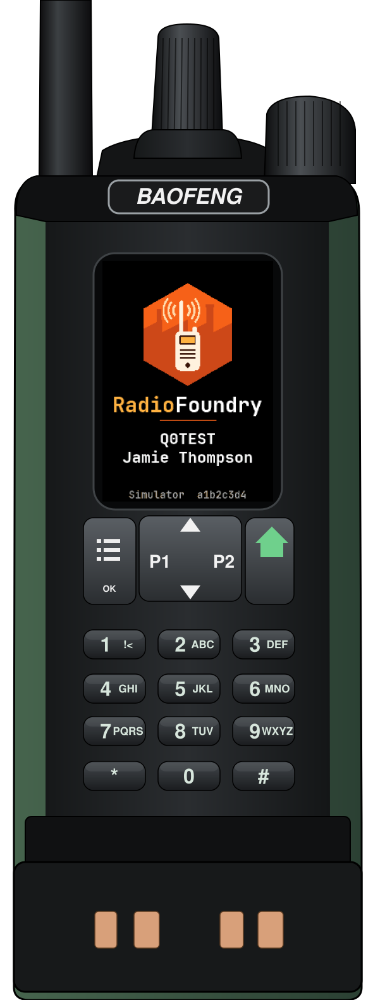
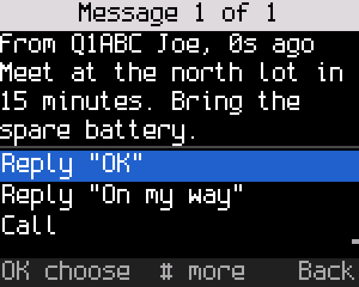
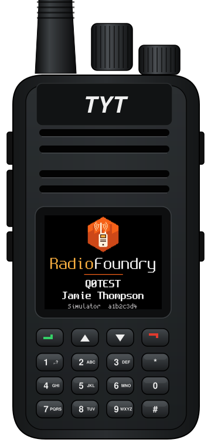

完整
电台支持的全部功能。
不包含: 无
适用于数字电台的开源多模固件：DMR、P25、NXDN 和 FM，采用 MIT 许可证。
永久免费。可直接从浏览器安装到您的电台，适用于任何操作系统；无需下载软件。






已支持
FM·DMR·P25·NXDN · 136-174 / 400-480 MHz · 航空波段 AM 108-137 MHz · 调频广播 87-108 MHz

Retevis RT84
已支持
FM·DMR·P25·NXDN · 136-174 / 400-480 MHz

Baofeng DM-1801
已支持
FM·DMR·P25·NXDN · 136-174 / 400-470 MHz · 航空波段 AM 108-137 MHz · 调频广播 87-108 MHz

Kydera CDR-300UV
已支持
FM·DMR·P25·NXDN · 136-174 / 400-480 MHz · 调频广播 87-108 MHz

TYT MD-390, Retevis RT3
已支持
FM·DMR · 400-480 MHz or 136-174 MHz (one band per radio)

TYT MD-UV390, TYT MD-UV390 Plus 10 W
已支持
FM·DMR·P25·NXDN · 136-174 / 400-480 MHz

已支持
FM·DMR·P25·NXDN · 136-174 / 400-480 MHz

Retevis RT90
已支持
FM·DMR·P25·NXDN · 136-174 / 400-480 MHz

已支持
FM·DMR·P25·NXDN · 902-928 MHz
电台支持的全部功能。
不包含: 无
面向业余无线电，去掉商用功能。
不包含: 基础加密（Motorola / Anytone BP）, Motorola TMS 文本格式, ARS 注册, LRRP 定位, 控制站模式（以网络启动、由电脑应答数据、固定链路）, SNMP v2c 代理与 trap（USB 与空中）
面向商业和公共事业电台，去掉仅供业余使用的功能。
不包含: MMDVM 热点, APRS：AFSK 位置、状态、消息；DMR 位置；KISS TNC
直接在浏览器中定制您自己的软件构建，只选需要的功能。